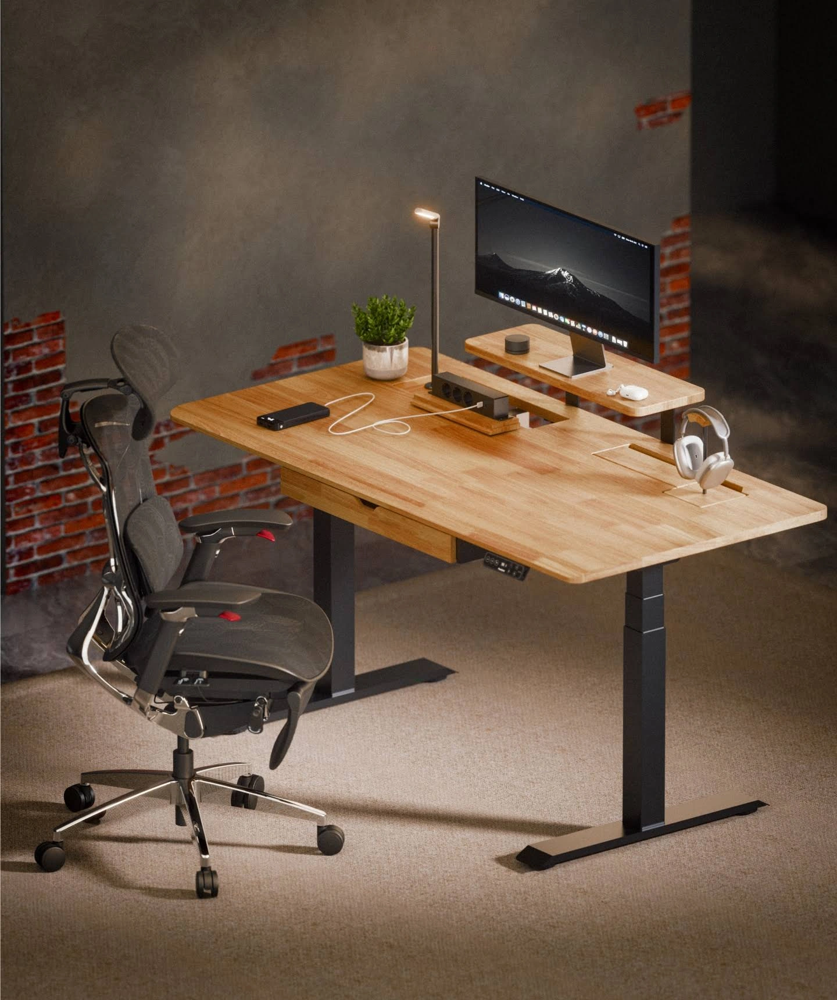
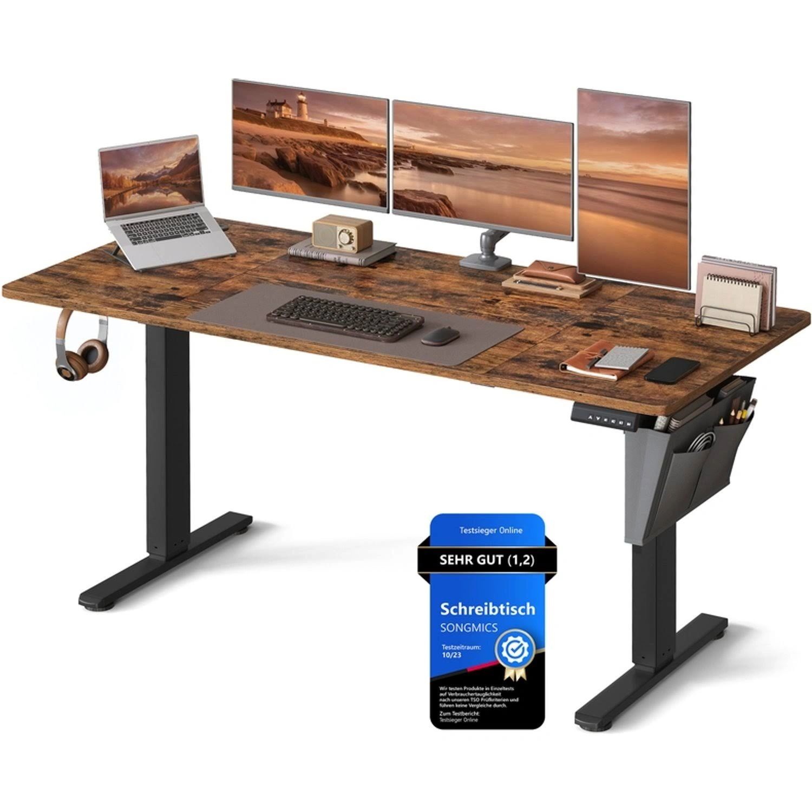

FW-C19 · 照片选片与设备整理台
评分：89/100，排名14，第二批。分项：{'product_30': 29, 'need_25': 22, 'reference_20': 16, 'difference_15': 14, 'feasibility_10': 8}。评分是测试潜力，不是效果预测。
产品：Dual Ultra X 白色 180×80 cm。
用户：摄影、视频或内容创作者。
需求：电脑外还有相机、存储卡和资料区。
卖点：180×80可分工的桌面。
机会类型：三：新使用场景。
参考什么：参考有真实职业物件的桌面，而不是套用空泛创作者标签。
为什么：P3尺寸真实；摄影角色与购买意向为待测场景。
如何差异化：双屏减成一块大屏，使用相机、读卡器和分格存储盒，绝不声称附件随桌附赠。
场景：有深橄榄绿墙与灰色窗帘的剪辑工作室。
构图：从桌板前沿稍上方横向中景拍，左设备整理、右屏幕选片；前沿下方控制器露出。
人物及动作：约33岁创作者站姿把存储卡放入自有收纳盒，画面中的屏幕内容模糊。
渠道：Meta Feed；Google PMax 图片资产。比例：1.91:1、4:5。德语主题：Platz für Technik und kreative Arbeit。
资格依据：白桌白架180×80在售变体；双电机；规格区高度60–125 cm不含桌板；多尺寸140/160/180/200 cm可选。
不能添加的宣称：营销段落160 kg载荷与规格区动态120 kg/静态160 kg不同；不做重载数字广告，先复核。
证据边界：有A类实际图片参考；具体原创场景和转化效果尚待测试。图片参考体现视觉方法，不构成竞品效果数据。需求证据：P3；行业场景与具体设备组合为测试假设。
参考原图

FLEX-GOOG-057FLEX-GOOG-057 · FlexiSpot · Google · 真实广告内的图像组件（非完整广告版式）
原广告来源。德国日期筛选列表已核验；单条首次/最后日期未读取。

SONG-GOOG-003SONG-GOOG-003 · SONGMICS · Google · 真实广告内的图像组件（非完整广告版式）
原广告来源。详情日期与德国地区已核验。